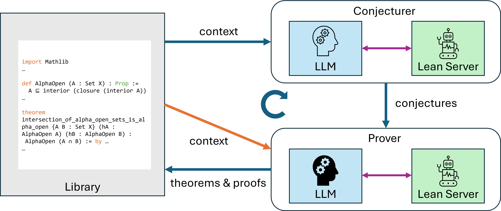

LLM conjecturer and prover agents generate Lean 4 conjectures and proofs over Mathlib, verified by a Lean server and accumulated as in-context examples.
Abstract
Large Language Models (LLMs) have demonstrated significant promise in formal theorem proving. In this study, we investigate the ability of LLMs to discover novel theorems and produce verified proofs. We propose a pipeline called Conjecturing-Proving Loop (CPL), which iteratively generates mathematical conjectures and attempts to prove them in Lean 4. A key feature of CPL is that each iteration conditions the LLM on previously generated theorems and their formal proofs, enabling parameter-free improvement of proof strategies via in-context learning. We provide both theoretical and experimental evidence that CPL increases the discovery rate of hard-to-prove theorems compared to frameworks that generate statements and proofs simultaneously. Moreover, our experiments show that reusing the LLM's own formally verified outputs as context consistently improves subsequent proof success, demonstrating the effectiveness of self-generated in-context learning for neural theorem proving. The source code is available at https://github.com/auto-res/ConjecturingProvingLoop.
Problem
Prior LLM theorem-proving work mainly solves existing problems. The question here is whether LLMs can discover novel theorems and produce formally verified proofs of them.
Approach
The Conjecturing-Proving Loop (CPL) separates a conjecturer LLM (GPT-4o) from a prover LLM (o3). Both interact with a Lean server to check validity, novelty, and proofs. Verified theorem-proof pairs are added to a growing Lean library, which serves as context in later iterations, so proof strategies improve through in-context learning without parameter updates. Experiments seed the library with Lean definitions of semi-open, alpha-open, and preopen sets built on Mathlib.

Figure 1: Overview of Conjecturing-Proving Loop. Conjecturer generates conjectures using Library as context, Prover attempts to prove them, and proven conjectures and their proofs are stored in Library as theorems. Library also provides context to Prover. Both Conjecturer and Prover processes consist of interactions between LLMs and Lean Server.
Results
Over 30 loops, CPL rediscovered research-level results, including that the intersection of two alpha-open sets is alpha-open. A theorem the LLM could not prove without context was proved using the self-generated library, supporting the benefit of self-generated in-context learning.